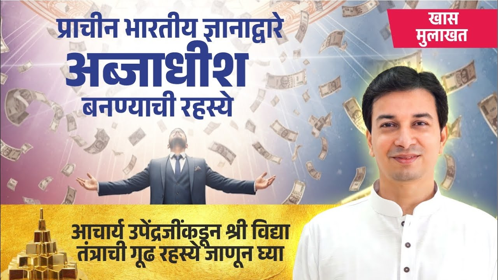

आज लोग दिन-रात खटते हैं, कड़ी मेहनत करते हैं, फिर भी महीना किसी तरह ही निकलता है। वहीं एक दूसरा वर्ग है, जो उन्हीं से काम करवाता है और अत्यंत धनवान हो जाता है।
यह अंतर इतना बड़ा क्यों है? इसी प्रश्न से अंतरयोग के इस भव्य श्रीविद्या शिविर की बात शुरू होती है।
वक्ता के अनुसार, अरबपति बनने का रहस्य श्रीविद्या है: देवी ललिता त्रिपुरसुंदरी की उपासना की प्राचीन भारतीय परंपरा, जो धन को सँभालना और भोग व मोक्ष दोनों साथ पाना सिखाती है। जो वर्ग इसे जानता है, वह उसी परिश्रम से अत्यंत समृद्ध हो जाता है। चाणक्य भी कहते हैं कि धर्म का मूल अर्थ है।
मेहनत बराबर, फल इतना अलग क्यों?
अपने देश में देखें या पूरे विश्व में, एक वर्ग बहुत परिश्रम करता है और उसे थोड़ा वेतन मिलता है। दूसरा वर्ग उसी परिश्रम से अत्यंत समृद्ध हो जाता है।
वक्ता के अनुसार इसका कारण यह है कि एक वर्ग को श्रीविद्या ज्ञात है। श्रीविद्या (Shri Vidya) भारत की प्राचीन साधना-परंपरा है, जो देवी ललिता त्रिपुरसुंदरी की उपासना पर आधारित है। हमारी अधिकांश जनता से यह छिपाई गई, लुप्त हो गई, या गुप्त रखी गई।
क्या आपने कभी सोचा है कि आपकी मेहनत और आपकी समृद्धि के बीच कौन-सी कड़ी छूट रही है?
एक दुर्लभ और दिव्य परंपरा
यह विद्या कितनी शक्तिशाली है, इसे इसकी परंपरा से समझिए। शंकराचार्य जी की सौंदर्यलहरी, अगस्त्य मुनि की श्रीविद्या-परंपरा, दत्तात्रेय, मच्छिंद्रनाथ और गोरखनाथ, और कौटिल्य का अर्थशास्त्र; ये सब हमारे दुर्लभ साधन हैं।
वक्ता एक चौंकाने वाली बात कहते हैं। विदेशों में जो इतना धन दिखता है, वह दो ही प्रकार से आया है: या तो लूटकर, जो हम सब जानते हैं, या बुद्धि से। और वह बुद्धि भी भारत की श्रीविद्या ही थी।
"अरबपति कैसे बनें": शिविर का संकल्प
इस शिविर का उद्देश्य है श्रीविद्या की सबसे उन्नत और शक्तिशाली साधना को भारतीय युवाओं, उद्यमियों और व्यवसाय करने के इच्छुक हर व्यक्ति तक पहुँचाना। कार्यक्रम का नाम ही है: अरबपति कैसे बनें, एक अरब तक कैसे कमाएँ।
देश के पाँच ट्रिलियन की अर्थव्यवस्था बनने पर वक्ता गर्व करते हैं। पर उनका प्रश्न है: यदि इस प्रक्रिया में कुछ गिने-चुने उद्यमी ही बड़े हों और आम मनुष्य वैसा ही रहे, तो पाँच, दस या बीस ट्रिलियन से राष्ट्र को अधिक लाभ नहीं।
उनका संकल्प है कि देश के कम से कम दो प्रतिशत लोग, यानी लगभग तीन करोड़ लोग, श्रीविद्या वाले बड़े धनवान और उद्यमी बनें।
श्रीयंत्र पर कुंकुम अभिषेक क्या है?
शास्त्रों में एक विशेष रचना है, श्रीयंत्र (Shri Yantra), जो श्रीविद्या का पवित्र ज्यामितीय विग्रह है। उस पर कुंकुम अभिषेक करके उसकी विशेष साधना की जाती है।
यह गुप्त साधना है, और इस शिविर में इसे आज लोगों के सामने लोकार्पित किया जा रहा है।
सोने की चिड़िया और "गरीब ब्राह्मण" का भ्रम
वैदिक काल में भारत सोने की चिड़िया था। वक्ता कहते हैं कि आज वह वैसा नहीं रहा, और हमें ऐसा भारत नहीं चाहिए।
हम सदा "एक गरीब ब्राह्मण था" की कहानियाँ सुनते आए हैं। पर वक्ता इसे सीधे नकारते हुए कहते हैं कि ब्राह्मण गरीब नहीं होता। यदि वह वेद को ठीक से जानता है, तो उसे लक्ष्मी का वरदान ही है कि वह धनवान हो।
सुखस्य मूलं धर्मः का अर्थ क्या है?
आचार्य चाणक्य का सूत्र इस बात की नींव है:
सुखस्य मूलं धर्मः। धर्मस्य मूलम् अर्थः। अर्थस्य मूलं राज्यम्॥
"सुख का मूल धर्म है, धर्म का मूल अर्थ (धन, resources) है, और अर्थ का मूल राज्य है।"
(चाणक्य सूत्र १-३)
धर्म करना हो, किसी का पालन करना हो, धन तो लगेगा ही। इस विषय को टालकर काम नहीं चल सकता।
स्कूल में धन क्यों नहीं सिखाया जाता?
विद्यालयों और महाविद्यालयों में धन के बारे में कहीं पढ़ाया जाता है क्या? प्रबंधन की पढ़ाई में दूसरों के धन का प्रबंधन सिखाया जाता है। पर स्वयं धनवान कैसे बनें, इसकी कोई कक्षा नहीं।
इसलिए वक्ता चाहते हैं कि यह विद्या पाठ्यक्रम के अनुसार विद्यालयों और महाविद्यालयों में पढ़ाई जाए, और शिक्षा मंत्री, वित्त मंत्री से लेकर प्रधानमंत्री तक सभी इस योजना को समझें। यह कार्य भारत के हर शहर, हर गाँव तक ले जाया जा रहा है।
आपकी शिक्षा ने आपको कमाना सिखाया, पर क्या धनवान बनना भी सिखाया?
धन, शक्ति और राष्ट्र की रक्षा
धन हो तो शक्ति निर्माण होती है: सशस्त्र सेनाएँ सशक्त रहती हैं, देश की रक्षा होती है। वक्ता कहते हैं कि देश बचा, तो हमारा धर्म टिकता है।
यदि भूमि ही चली गई, तो क्या बचेगा? रक्षा के लिए भी धन चाहिए। शरीर की देखभाल हो, व्यवसाय हो या कंपनी, हर काम में धन लगता है।
धन बुरा नहीं: भोग और मोक्ष साथ-साथ
हमें सिखाया गया कि धनवान बुरे हैं, पैसा बुरा है, पैसे से दिमाग खराब होता है। वक्ता कहते हैं, यह गलत है। अयोध्यापति श्रीराम और द्वारकाधीश श्रीकृष्ण को धन से क्या कष्ट हुआ?
श्रीविद्या केवल धन की विद्या नहीं है। यह सिखाती है कि धन को कैसे सँभालें, और भोग (सांसारिक सुख) और मोक्ष (मुक्ति) दोनों एक साथ कैसे पाएँ। साधक को शक्तिपात दीक्षा (गुरु द्वारा आध्यात्मिक ऊर्जा का संचार) से शक्ति दी जाती है।
एक आवाहन
अंत में वक्ता देश के सभी लोगों से आवाहन करते हैं कि अंतरयोग श्रीविद्या साधना, श्रीविद्या दीक्षा और श्रीविद्या शिविरों में अवश्य आएँ।
मुख्य बातें
- मेहनत और समृद्धि के बीच का अंतर, वक्ता के अनुसार, श्रीविद्या के ज्ञान का अंतर है।
- श्रीविद्या की परंपरा शंकराचार्य, अगस्त्य मुनि, दत्तात्रेय, मच्छिंद्रनाथ, गोरखनाथ और कौटिल्य के अर्थशास्त्र से जुड़ी है।
- शिविर का संकल्प: भारत के दो प्रतिशत, लगभग तीन करोड़ लोग, बड़े धनवान और उद्यमी बनें।
- श्रीयंत्र पर कुंकुम अभिषेक की गुप्त साधना अब सबके लिए खोली जा रही है।
- चाणक्य के अनुसार धर्म का मूल अर्थ है; धन के विषय को टाला नहीं जा सकता।
- धन बुरा नहीं; श्रीविद्या भोग और मोक्ष दोनों को साथ साधती है।

आगे पढ़ें
क्या धन कमाना आध्यात्मिक जीवन के विरुद्ध है? क्या पैसे की इच्छा रखना कोई पाप है?

आपका ध्येय क्या है? आपका लक्ष्य कितना बड़ा है? संसार चलाना है, घर चलाना है, या कुछ और?

सच्चा धन क्या है? सच्चा धन केवल पैसा नहीं है। आचार्य जी के अनुसार इसमें संपत्ति, सम्मान, समाज, समय, परिवार और संबंध, और स्वास्थ्य, ये सब आते हैं। धन…